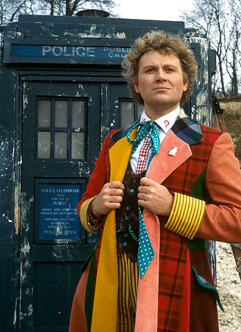

Altıncı Doktor

Altıncı Doktor, Doctor Who adlı dizide Doktor'un 6. yüzüdür. 6.Doktor ilk kez Twin Dilemma'da görülmüş ve Time and Rani bölümünde rejenerasyon geçirmiştir.
6. Doktor'u oynayan aktör Colin Baker aynı zamanda dizide daha önce Komutan Maxil karakterini'de canlandırdı. Dönemin senaristleri bunu açıklamak için 5. Doktor ve Maxil'in kavga ettiği bir sırada DNA geçişmesi olduğunu ve bu yüzden Doktor'un bir sonraki yüzünün Maxil'e benzediğini söylediler. 5. Doktor Androzani'de gezegeni ve Peri'yi kurtarmış ve kendisi ölümcül bir yara almıştır. TARDİS'e ulaşıp, orada rejenerasyon geçirmiş ve 6. Doktor gelmiştir.
6.Doktor rejenerasyon'un yarattığı zihin karmaşası yüzünden ilk zamanlarda Peri'ye saldırmıştır.
6.Doktor sadece 21.sezon'un en son bölümünde yani Twin Dilemma'da gözükmüştür. Yeniden canlandıktan sonra 6.Doktor ilk kez TARDİS ile yolculuğa çıkmış ve 1000 yıl orada kalmak için Titan 3 adında bir asteroide gitmiştir. Burada salyangozumsu bir canlı olan Mestor ile tanışır.
6.Doktor bu 22. Sezon'un tamamında gözükür. Sezon Attack of Cybermen bölümü ile başlar, Revelation of the Daleksile biter. 22.sezonda bir Doctor Who klasiği olarak dizinin yıl dönümü olmamasına rağmen Doktor eski bedenlerinden biriyle İkinci Doktor'la karşılaşır. The Mark of the Rani bölümünde ise daha sonra 6.Doktor'u yeniden canlanmasına neden olacak Rani ilk defa görünür. Ayrıca bu bölümde Master'da gözükmüştür. Rani Usta'ın yol arkadaşıdır. Sezon'un son bölümü olan Revelation of the Daleks'de ise daha önce 4.Doktor zamanında gözüken Davros bir kez daha gözükmüştür.
6.Doktor'un televizyon yayınında göründüğü son 23. Sezondur. Sezon'un tamamı Doktor'un TARDİS'inin zamandan Galliffrey'e zorla çekilerek Galiffrey Mahkemesi tarafından yargılanmasından oluşur. Sezon Trial of a Time Lord: The Mysterious Planetile başlar ve The Ultimate Foeile biter.
The Mysterious Planet bölümünde Doktor'un karanlık tarafı Valeyard Galiffrey mahkemesinde davacı olarak görünmüştür. Sabalom Glitz ve İnqusitior'da bu bölümde ilk defa görünmüşlerdir.
Mindwarp'da Peri son kez görünmüştür. Valeyard Doktor'a mahkemede Peri'nin öldüğünü söylemiştir.
Terror of the Vervoids'de Melanie Bush karakteri ilk kez görünmüştür. Melanie'nin zaman çizgisi Doktor ile terstir. Bu yüzden Doktor Mel'i tam tanımasa'da Mel Doktor'u tanıdığı için Galiffrey Mahkemesinde Doktor için tanıklık yapmıştır.
The Ultimate Foe 6.Doktor'u canlandıran Colin Baker'ın oynadığı son bölümdür. Master bu bölümde olaylara dahil olarak Matriks'in içine ne kadar kolay sızdığını göstermiş böylelikle Valeyardın'da Matriks'e sızıp Doktor'un TARDİS'inin görüntü kayıtlarını değiştirdiğini belirtmiştir. Ayrıca Master Valeyard'ın Doktor'un 12. ve 13. bedeni arasında kalmış karanlık tarafı olduğunu açıklamıştır.
Dizinin 24.sezonu başlamadan Colin Baker BBC tarafından diziden kovulmuştur. Colin Baker'de 6.Doktor'un yeniden canlanacağı Time of the Rani bölümünde bu nedenle oynamak istemez. Bir sonraki Doktor'u canlandıracak olan Slyvester Mccoy Colin Baker'ın yerine geçer ve rejenerasyon sahnesinde 6.Doktor'u canlandırır. Bu şekilde Doctor Who tarihinde ilk kez iki Doktoru canlandıran kişi Sylvester McCoy olur.
Rani 6. Doktor'u Zaman Vorteksinde Mel ile yolculuk ederken yakalar. Onlara ateş ederek TARDİS'in Vorteks'den çıkmasına ve düşmesine neden olur. TARDİS gelişi güzel bir gezegene düşer ve bu düşme sırasında Doktor ölümcül bir yara alarak yeniden canlanır.
6. Doktor'un diğer Doktorlar gibi iyilik yapma ve iyi biri olma duygusu değişmemiştir. 6. Doktor biraz kibirlidir. Rejenerasyon'un ilk dakikalarında aynaya bakıp kendisi için Vay be. Ne kadar güzel demiştir. 6. Doktor genel'de yol arkadaşlarına bağlıdır. Valeyard'dan Peri'nin öldüğünü öğrendiği Mindwarp bölümünde üzülmüştür. 6. Doktor daha çok renkli kişiliği ile tanınır. Bunu'da kendi giydiği adi ceket ve gökkuşağı şemsiye ile belli eder.
Colin Baker'ın oynadığı 1984-1986 yıllarında televizyon yapımının reytingleri düşmüş ve BBC reytinglerin azalmasını gerekçe göstererek Colin Baker'ı diziden atmıştır. Colin Baker bazılarına göre bu sebeple dizinin 3 yıl süren düşüşünü başlatmıştır. Dizinin hayranları arasında pek popüler bir Doktor olmayan 6.Doktor dizinin o yıllarda çıkarılan sesli hikayelerinde tüm Doktorları geride bırakarak hayranların gönlünü kazanmıştır.